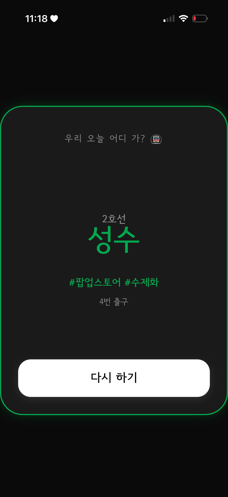
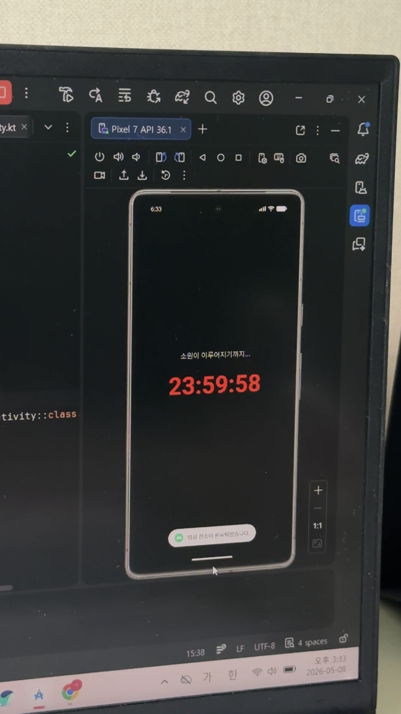

1. 랜덤 지하철 목적지 뽑기
| 기간 / 인원 | 2026.01 ~ 2026.02 / 1명 |
|---|---|
| 사용 기술 | HTML, CSS, JavaScript |
| 핵심 역할 | 프론트엔드 개발 및 UI 설계 |
- Math 객체를 활용한 무작위 역 추출 알고리즘 구현
- CSS를 이용한 직관적인 반응형 화면 구성
배운 점: 실제 데이터를 배열로 관리하고, 사용자의 상호작용에 따라 화면이 변하는 동적 웹 구현 능력을 키웠습니다.
프론트엔드 중심 포트폴리오
Updated: 2026-05-29대표 프로젝트를 중심으로 역할, 사용 기술, 주요 기능을 정리했습니다.

| 기간 / 인원 | 2026.01 ~ 2026.02 / 1명 |
|---|---|
| 사용 기술 | HTML, CSS, JavaScript |
| 핵심 역할 | 프론트엔드 개발 및 UI 설계 |
배운 점: 실제 데이터를 배열로 관리하고, 사용자의 상호작용에 따라 화면이 변하는 동적 웹 구현 능력을 키웠습니다.

| 기간 / 인원 | 2026년 5월 / 1명 |
|---|---|
| 사용 기술 | Kotlin |
| 핵심 역할 | 아이디어 구체화 및 프로토타입 개발 |
배운 점: 추상적인 아이디어를 코드로 구현하는 과정을 통해 안드로이드 시스템의 생태계를 배우고 툴 활용 역량을 높였습니다.